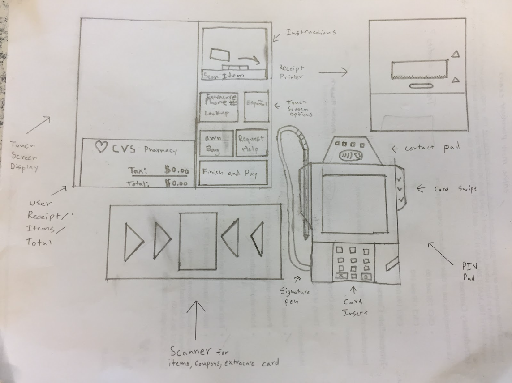
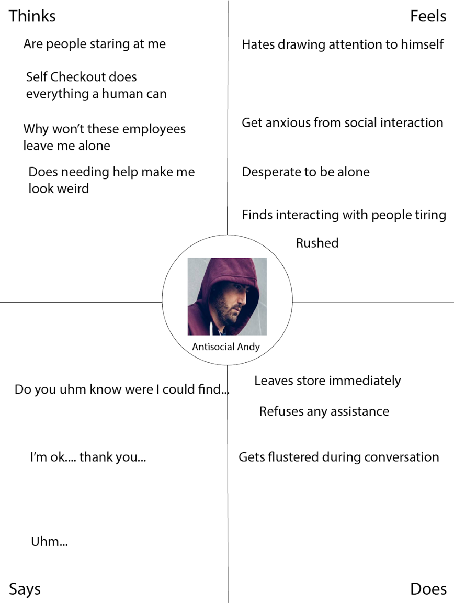
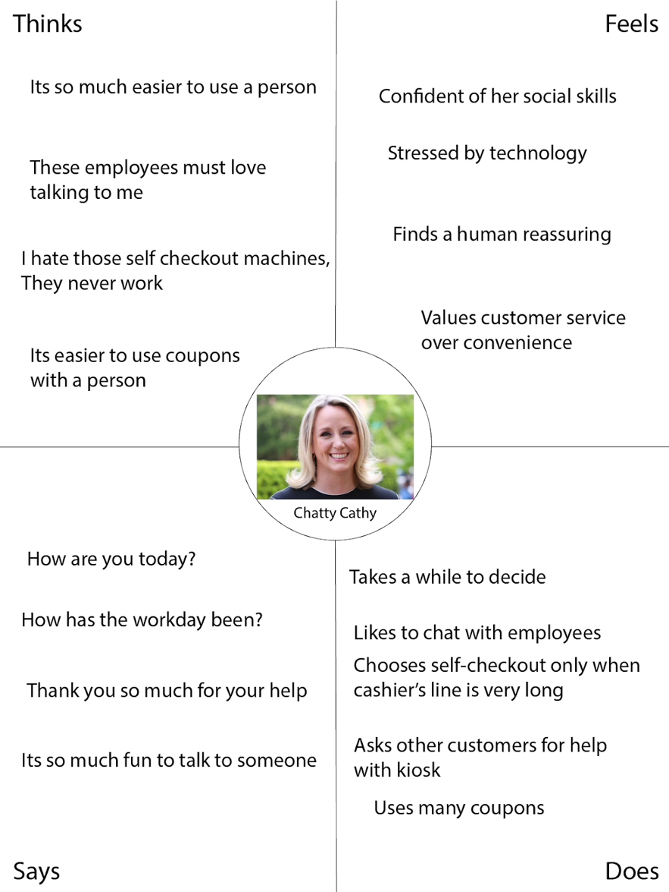

Personas
This project explores the self-checkout kiosk design at CVS Pharmacies through personas. After thorough observations and interviews, our group designed two personas representative of CVS self-checkout userbase, to later be used in storyboards.
The Interface
The kiosk automates the cashier’s role in checkout. The touch screen displays all items the scanner has scanned and the current “receipt”. A request help button is available at every step. The customer places products in the bagging area, and selects their bagging option. Next, users can scan coupons or their Extracare card, and select their payment method, finishing the transaction on the PIN pad.
Explain Observation and Sample Size Stuff
Evaluating Our Sample
Generally, our sample size was balanced; we observed people with preferences towards, against, and indifferent to self-checkout. However, we mainly observed students, including several who were experienced at using coupons at self checkout, both perhaps biasing towards familiarity with self-checkout. We appropriately designed our personas with this bias in mind.
Mental Models
The Cashier’s Alternative:
CVS Self-checkout is an alternative to the cashier. While it is a single operating unit capable of completing most transactions, it works in conjunction with staff to streamline the checkout process, and may require assistance.
When wait time for self-checkout and cashier is similar, users with this mental model are equally likely to choose either staff or self-checkout.
The Cashier’s Replacement:
CVS Self-checkout replaces the cashier, offering a shopping experience with no human interaction required. It fails when underperforming the cashier.
Any amount of human assistance required will be unexpected and frustrating for users with this mental model, especially if assistance required to complete an expected task.
Personas
Antisocial Andy:

Antisocial Andy wants to minimize time spent in social interactions, as he feels uncomfortable attracting attention to himself.
Andy gets flustered when the self-checkout interface unexpectedly requires human interaction, and especially frustrated if the solution seems simple.
Andy is representative of a broader userbase that generally wants to avoid the cashier, seeing the kiosk as independent from staff and potentially faster.
Chatty Cathy:
Chatty Cathy is a social person who enjoys talking to employees. She prefers to not use self-checkout because of past experiences, but occasionally returns when the line is too long. Cathy struggles transitioning to each step in the checkout process, especially in the disconnect between the screen and PIN pad. She also struggles waiting for staff to help, as it only further confirms her suspicions that the machine is an inferior replacement. Cathy is representative of users who find the self-checkout unintuitive, and believe it restricts the options available to the users.